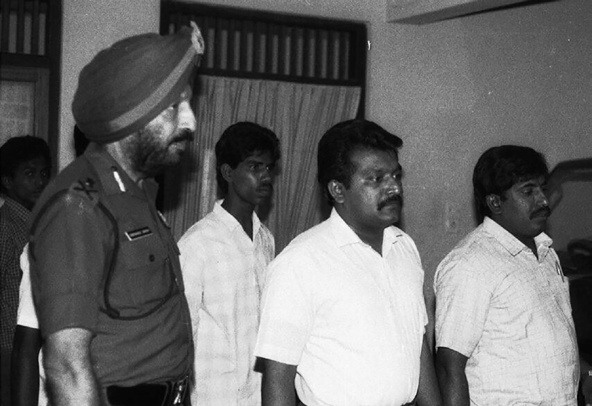
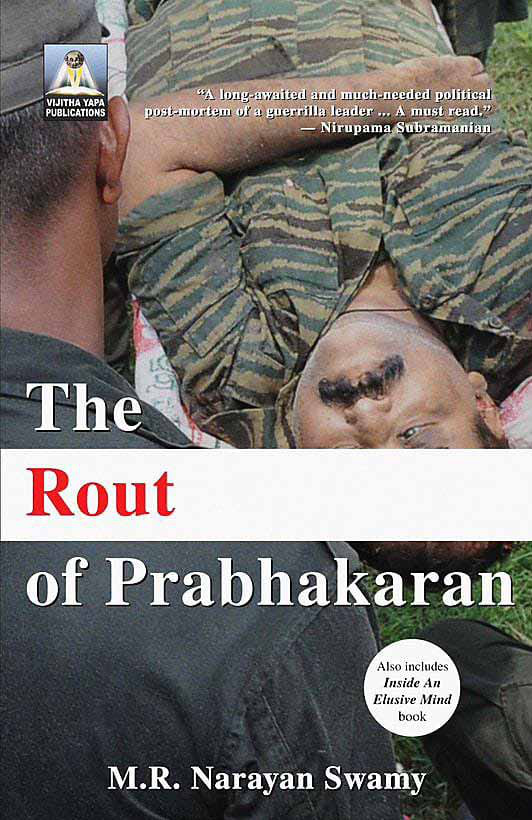

W hat turns a young man, who leaves home to fight legitimate grievances in his community and nurtures big dreams on behalf of his people, into a dedicated killer who sees violence as the answer to every problem?
W hat turns a young man, who leaves home to fight legitimate grievances in his community and nurtures big dreams on behalf of his people, into a dedicated killer who sees violence as the answer to every problem?
Jaffna Monitor hellojaffnamonitor@gmail.com 19 W hat turns a young man, who leaves home to fight legitimate grievances in his community and nurtures big dreams on behalf of his people, into a dedicated killer who sees violence as the answer to every problem? The Indian journalist, M.R. Narayan Swamy, who has followed the story of The Liberation Tigers of Tamil Eelam (LTTE), sets out to answer this question in his timely and well- researched book The Rout of Prabhakaran. As the chief negotiator in the Sri Lankan peace process, I asked myself the same question numerous times: How, as Swamy puts it, did “guns become the answer to overcome each and every obstacle in the chessboard of Tamil Eelam” in Velupillai Prabhakaran’s mind? Prabhakaran was the main strength, as well as the principle weakness, of the LTTE. He created one of the most effective guerrilla forces in the world and turned the somewhat sleepy and unsexy Tamil struggle into one of the epic wars at the turn of the 20th century. No movement in human history has mobilised the suicide weapon in such a deadly fashion — killing a former prime minister of India, and numerous Sri Lankan leaders. It all ended in an orgy of violence orchestrated by the Sri Lankan army in May 2009, with the death of every LTTE leader who had not defected to the army years earlier. Prabhakaran and his entire family were killed. His 12-year-old son Balachandran was murdered in a blatant war crime even after being taken into custody by the army. A paradox Though he was fighting for Tamils, paradoxically, Prabhakaran also became the big killer of Tamils. He annihilated M.R. Narayan Swamy From right to left: LTTE’s only deputy leader Gopalaswamy Mahendraraja (Mahattaya), LTTE chief Prabhakaran, his trusted bodyguard Thiyagu, and an Indian Army officer during the Indian Peacekeeping Force (IPKF) era. Ironically, Mahattaya was later executed by the LTTE on Prabhakaran’s orders as an alleged RAW spy, while Thiyagu and a female LTTE fighter were executed by the LTTE after she became pregnant with his child.

Jaffna Monitor hellojaffnamonitor@gmail.com 20 all competing Tamil militant groups. He hunted down Sri Sabaratnam of the Tamil Eelam Liberation Organisation in Jaffna. His comrade-in-arms Mahattaya was shot as an Indian spy in the Vanni. The historic Tamil leader Amirthalingam was murdered in Colombo. My friend Neelan Thiruchelvam was blown up by a suicide cadre in Colombo, even as he was headed for Harvard. The LTTE later told me it was because he had refused to abandon the process of proposed changes to the constitution. Foreign Minister Lakshman Kadirgamar was shot in 2005 in what today can best be seen as the beginning of the end for Prabhakaran. How does one explain this turn in Prabhakaran? Two explanations stand out in Swamy’s telling. Prabhakaran had a very narrow horizon; he did not understand geopolitics or the workings of the big neighbour, India. He hardly ventured to the south of Sri Lanka and had interacted very little with Sinhalese or Muslims. His perspective was that of the village. How else can you explain the stupidity of killing Rajiv Gandhi in 1991, who was India’s prime minister from 1984 to 1989, at a time when India was the main source of support for his struggle? Would a successful rebel movement in Mexico attempt to murder President Trump? The LTTE was also primarily a military movement. It did not mainly involve itself in mass work, political mobilisation, or humanitarian efforts. Did the early spectacular military success against the Indian army, later over-running the Elephant Pass, nearly wiping off the Palaly air base and attacking Colombo airport in an extraordinary raid with devastating effects on the Sri Lankan economy create a certain arrogance? There is a history of guerrilla fighters turning themselves into successful political leaders, particularly when they understood the need for a broad front, and, even more importantly, that the gun was only a supplementary vehicle to the political struggle. Yoweri Museveni in Uganda and Meles Zenawi in Ethiopia, the Chinese and Vietnamese Communists won military triumphs against all odds, but at the end their victories were political. Michael Collins, the founding father of Ireland, was an extraordinary assassin of the British, but he knew that the British empire could not be brought down with guns alone. An end foretold Was the end preordained then for Prabhakaran? Swamy thinks so. But he doesn’t try to explain why the LTTE entered into the

Jaffna Monitor hellojaffnamonitor@gmail.com 21 peace process, not out of weakness, but at the peak of its power in 2002. Why negotiate when you are strong? I met Prabhakaran many times and saw softer aspects to the man. He was a film enthusiast and a dedicated cook. He adored his children and sent me to Ireland to secure a place at Dublin University for his beloved daughter Duwaraka. She was accepted, only to be caught up in her father’s renewed war and perish with her family in 2009. Prabhakaran’s friend and partner Anton Balasingham was the good influence on him, always offering sound and critical advice. It was after Bala died in 2006, that Thambi or younger brother as Bala called him, started making many mistakes. He strongly advised against the Tamil boycott of the 2005 election which brought Mahinda Rajapaksa to power. The Sri Lankan government also made a mistake by restricting access of foreigners to Prabhakaran. International diplomats like me had tried to guide him towards peace. At the end, it all led to his last apocalyptic decision to fight to the last day — and the last Tamil. Through Kumaran Pathmanathan, KP, the LTTE ‘foreign minister’, we offered to bring out all the combatants and civilians from the war zone. When KP went to finalise the deal, Prabhakaran refused. The rest is history. Swamy does not explain all aspects of the Sri Lankan crisis. The Sinhala war crimes are not centre stage; nor the catastrophic decisions of so many Colombo leaders who created a divided rather than united land. But Swamy masterly sums up the extraordinary life and legacy of Prabhakaran. The reviewer was chief peace negotiator between the LTTE and the Sri Lankan government. Note: This review originally appeared in The Hindu. All credits go to The Hindu and the author, Erik Solheim, for the content. Book Details: The Rout of Prabhakaran Author: M.R. Narayan Swamy Publisher: Vijitha Yapa Publications Price: Rs. 4,950.00 ISBN: 9786242050447